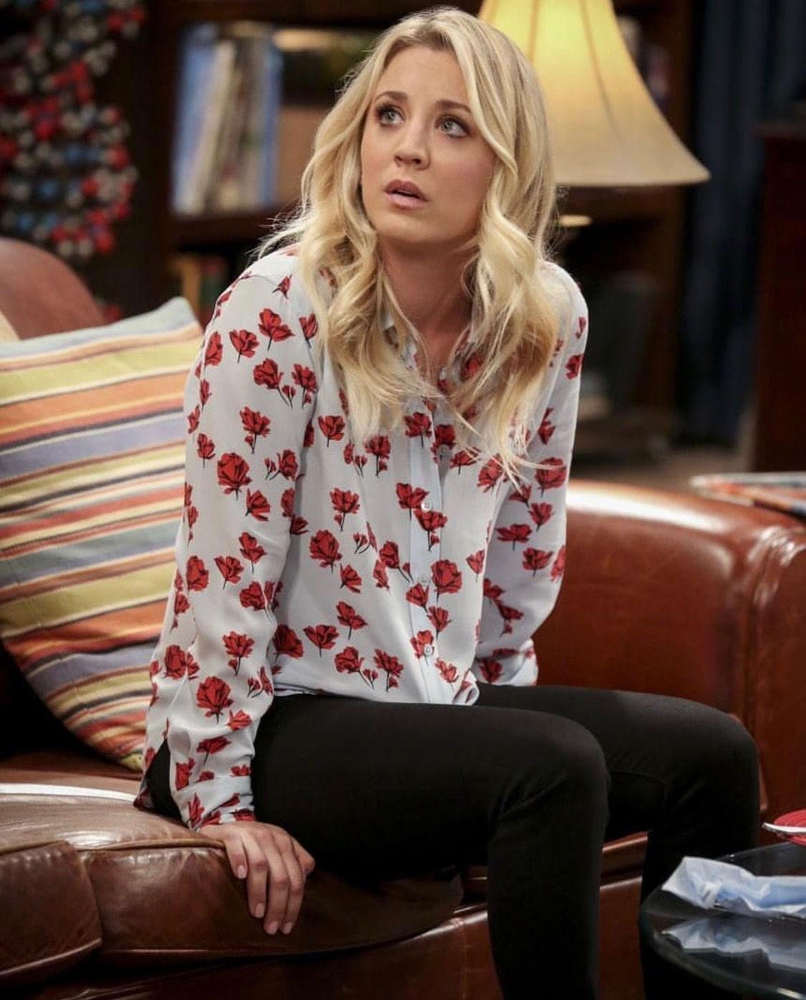

Welcome back!

Теория Большого Взрыва - американский сериал от студии Paramount.
Главные персонажи ТБВ:
| Персонаж | Фотография | Профессия | Коэфицент важности для меня, 0-7 |
|---|---|---|---|
| Шелдон | Физик-теоретик | 7 | |
| Леонард | Физик-эксперементатор | 5 | |
| Пенни |  | Официантка в кафе Актриса Медицинский представитель |
4 |
| Говард | Инженер | 6 | |
| Радж | Астрофизик | 3 | |
| Бернадет | Официантка в кафе Микробиолог |
2 | |
| Эми | Нейробиолог | 1 |
Они вместе двигаются по жизни и держатся друг за друга
Вы можете посмотреть этот сериал на Кинопоиске!